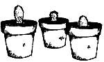

Over the centuries-in the course of adapting to harsh soil and climatic conditions-opuntias have developed the ability to propagate readily and rapidly, both vegetatively and by seed. Which (in simple terms) means that if you live in a not-too-moist part of the country and you'd like to start your own backyard prickly pear patch, you can do so-quite easily-with just a few cuttings. Here's how:
First, sever a number of pads from a parent plant and allow them to dry for a few days so that a callus forms over the wounds. (This is of paramount importance, for if the cuticle is not allowed to heal properly, it'll be subject to bacterial rot which can then quickly kill the cutting.)
Next, place each healed pad-callus side down-in a dry mixture of sand and soil in a clay pot. (Some folks prefer to plant their cuttings directly in the ground where they are to grow permanently. Depending on how dry your soil and climate are-and the drier, the better-this might not work the first time you try it.) Don't water your cuttings-or any cacti, for that matter-until they first show some sign of growth ... and then always be careful not to give the plants too much water at one time.
Incidentally the unripe fruit of the opuntia-when plucked from the mother plant and treated as above-is also capable of producing roots, stems, flowers ... and more fruit.
Prickly pear seeds may be sown in flats and new adult cacti grown from seedlings, but this is a time-consuming process. (Most nurserymen age the seeds for at least a year before planting them, to ensure proper germination.) If you wish to go this route, however, remember to [1] rinse away all traces of pulp from the seeds and [2] dry the seeds thoroughly before sowing them. Otherwise, fungi may-possibly-interfere with germination.
The ideal time to sow prickly pear seeds is in late spring. Cuttings, on the other hand, may be planted at any time of year. (Nonetheless, for the best growth it's advisable to place cuttings in the ground in spring or summer. The plants will take root in fall or winter ... but they won't grow until the arrival of warm weather. So you might as well wait until the days get nice and long to plant your cacti outside.)
Aside from being prolific producers of fruit, opuntias make a fine hedge plant. One of the oldest opuntia hedges surrounds the San Diego (California) Mission-founded in 1769-where, after centuries, the original botanic barrier is as strong as ever.
The opuntia: house, fruit, and hedge plant all in one!
|
 |
|
|